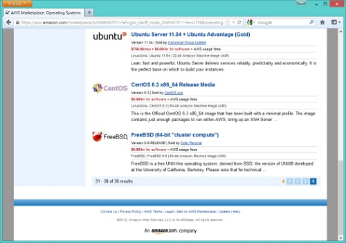

CentOS、FreeBSD、Debian 登陸 AWS

◎本文原載 Linux Pilot，原文章連結按此。
從前在 Amazon Web Services(AWS)，可使用的 Linux 版本不算多，但情況即將有所改變。2012 年 11 月 16 日，AWS Marketplace 正式追加對三種開源作業系統 CentOS、FreeBSD 和 Debian。

追加三個開源 OS 後，現時在 AWS 上可使用的開源系統將包括 AWS 自家的 Amazon Linux、CentOS、Debian、Fedora、Gentoo、Mandriva、Mint、OpenSolaris、PCLinuxOS、Red Hat Enterprise Linux、Slackware、SUSE Linux Enterprise Server、Ubuntu 和 FreeBSD。其中 CentOS 由 CentOS.org 提供，包括 32 和 64 位元版本。FreeBSD 則由 Colin Percival 提供，現時只有 64 位元版本。Colin Percival 在 2011 時曾經在 twitter 中提到，他其實是在 AWS 下利用 Windows 開機後，將映像檔臨時置換成 FreeBSD 的方法，所以目前只可以提供 64 位元版本。值得注意的是 Ubuntu。Ubuntu 由 Canonical 提供，分為免費版和附有技術支援服務的收費版，包括 32 和 64 位元版本。收費版每月 750 美元，另加每小時 0.09 美元的運算費用，可看到 Ubuntu 正在積極開拓財源。